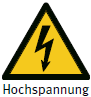

13 Unfälle durch elektrischen Strom
Bei jedem Stromunfall muss mit Kreislaufstillstand gerechnet werden.
Allgemeine Maßnahmen
- Auf Selbstschutz achten
- In jedem Fall zunächst für Stromunterbrechung sorgen
Niederspannung
(üblich im Haushalt und Gewerbe bis maximal 1 000 Volt):
- Stecker ziehen
- Ausschalten
- Sicherung/Sicherungsautomat betätigen
Hochspannung
(durch Sicherheitskennzeichen "Warnung vor elektrischer Spannung" gekennzeichnete Anlagen über 1 000 Volt):

- Abstand halten (20 m Abstand) und sofort Notruf "Hochspannungsunfall" veranlassen
- Fachpersonal herbeirufen (zwecks Ausschalten)
- Rettung aus Hochspannungsanlagen nur durch Fachpersonal!
- Hilfeleistung erst nach Eingreifen von Fachpersonal
Maßnahmen an verunfallter Person
- Bei jedem Elektrounfall ständige Kontrolle von Bewusstsein und Atmung (Kreislauf)
- Versorgung der verletzten Person je nach Zustand (Verbrennung)
- Ärztliche Behandlung veranlassen